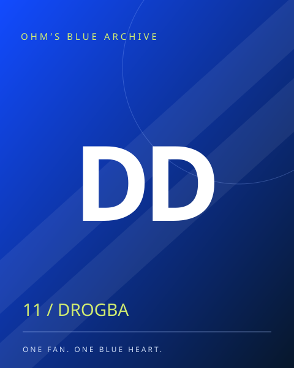
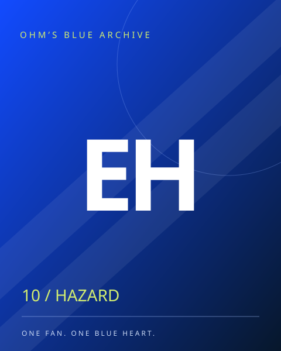
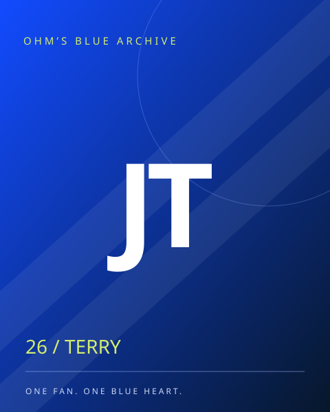
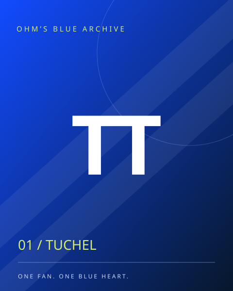
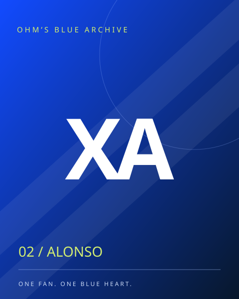

MY FAVORITE / 11DIDIER
DIDIER
DROGBA
ดิดิเยร์ ดร็อกบา
เปิดการ์ดในดวงใจ
ดิดิเยร์ ดร็อกบา · หนึ่งในคนที่โอห์มชื่นชอบในโลกฟุตบอล
DD / 11 · กราฟิกอักษรย่อออกแบบสำหรับคลังส่วนตัวของโอห์ม
นักเตะสามคนและโค้ชสองคนที่ผมชื่นชอบ บนโลกฟุตบอลของผม
นักเตะสามคนที่ผมชอบ
และสองโค้ชที่ผมชื่นชอบ

ดิดิเยร์ ดร็อกบา
ดิดิเยร์ ดร็อกบา · หนึ่งในคนที่โอห์มชื่นชอบในโลกฟุตบอล
DD / 11 · กราฟิกอักษรย่อออกแบบสำหรับคลังส่วนตัวของโอห์ม

เอเด็น อาซาร์
เอเด็น อาซาร์ · หนึ่งในคนที่โอห์มชื่นชอบในโลกฟุตบอล
EH / 10 · กราฟิกอักษรย่อออกแบบสำหรับคลังส่วนตัวของโอห์ม

จอห์น เทอร์รี
จอห์น เทอร์รี · หนึ่งในคนที่โอห์มชื่นชอบในโลกฟุตบอล
JT / 26 · กราฟิกอักษรย่อออกแบบสำหรับคลังส่วนตัวของโอห์ม

โธมัส ทูเคิล
โธมัส ทูเคิล · หนึ่งในคนที่โอห์มชื่นชอบในโลกฟุตบอล
TT / TOUCHLINE · กราฟิกอักษรย่อออกแบบสำหรับคลังส่วนตัวของโอห์ม

ชาบี อลอนโซ
ชาบี อลอนโซ · หนึ่งในคนที่โอห์มชื่นชอบในโลกฟุตบอล
XA / TOUCHLINE · กราฟิกอักษรย่อออกแบบสำหรับคลังส่วนตัวของโอห์ม
รายชื่อนักเตะและหมายเลขเสื้อเปลี่ยนได้ตามฤดูกาล ดูข้อมูลล่าสุดจากเว็บไซต์สโมสรโดยตรงครับ
ดูทีมชายบนเว็บไซต์ Chelsea FC ↗